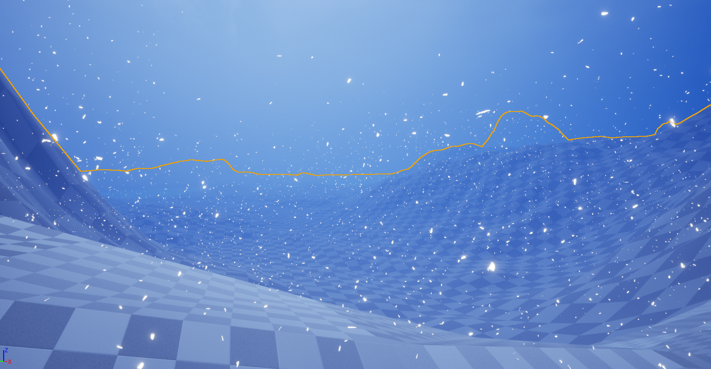
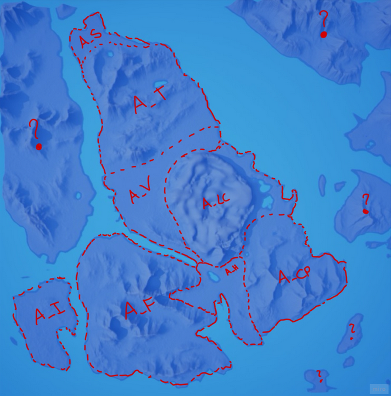

Game Design Document (old)
Old version of the Game Design Document created on Confluence. Contains highly detailed implementation infos and diagrams.
Read PDFA survival horror game driven by narrative and immersivity
The Shattered Peak is a survival horror game driven by narrative where you must surivive in a freezing cold environment chased by a dangerous entity to uncover the truth behind the mysterious events on a mysterious island.
In The Shattered Peak you need to manage your body temperature and traverse dangerous zones guarded by a monstrous creature that will hunt you. In the wilderness you can find tools for survival and collect wood to light up campfires and warm yourself up.
Survival systems are seamlessly integrated with dialogues blended with the environment taking insipiration from Giant Sparrow's "What Remains of Edith Finch" in order to deliver narrative and give direction to players. Narrative elements can also be found scattered throughout the island as letters and pages.
The game features diegetic UI and experience-oriented audio design to grant immersion in the atmosphere and the environment.
TRAILER
SHORT GAMEPLAY
 For the ideation phase, I analysed survival games to outline the aesthetics that the genre must evoke in the player coming up with a list of possible aesthetics and dynamics. Some examples are:
For the ideation phase, I analysed survival games to outline the aesthetics that the genre must evoke in the player coming up with a list of possible aesthetics and dynamics. Some examples are:
I then organised the Ideation meeting by dividing it into 3 phases: Diverging, Discussion and Converging.
I then refined the concept in a game idea and with the team identified the systems to be developed and assigned a priority for the prototype to each one, giving importance to the new key systems we wanted to include.
During this phase I focused on creating the Pitch presentation and on laying down the GDD (read the full old version) structure on Confluence while overseeing the whole prototype development, giving assistance and design direction to other developers.
I organised test rounds on the prototype, collected and analysed players feedback which I then refined into a short Feedback Analysis document that I presented to the rest of the team. This approach allowed us to identify weaknesses early in the prototype and respond promptly by revising the concept and the systems involved and creating a more fun and engaging game loop.

Following some of the suggestions made in the feedback document and other solutions found after further analysis and research, I modified the concept, creating a more solid concept that would solve the problems found in the prototype.
As lead designer and project manager I had the complete framework for project refactoring and development and assigned priorities and tasks to team members.
During the development period, I supervised every part of the development, helping and/or taking charge of tasks including:
Following I will explain some of the processes behind the Map layout and testing. Please watch the gameplay trailer at the top of the page to have more insights on the project.
The new concept changed the use of objects by tying progression to the finding of objects that allow the player to progress metroidvania-style.
Progression was meant to:
To achieve this effects we divided the whole map in areas where the player was free to explore, find resources to survive, narrative elements and key items to progress outside those areas.
 We designed those areas with landmarks and peculiar elements to make them unique from one another, and placed key items in each area to determine progression.
We designed those areas with landmarks and peculiar elements to make them unique from one another, and placed key items in each area to determine progression.
We then assigned a red number to each area to identify the creature level of aggression (higher number higher aggression)
With all those elements placed I proceeded to implement them in Unreal using landscapes, landscape materials, and various asset packs.
Following the final map layout that the player can found in the game with sites of interest and memorable landmarks.

 After the development of a satisfying version of the game that could return good feedback from players,
I organised a new test round including players who had played the prototype version (now far removed from the current version) and players new to the game.
After the development of a satisfying version of the game that could return good feedback from players,
I organised a new test round including players who had played the prototype version (now far removed from the current version) and players new to the game.
By collecting feedback and analysing the players as they played, I produced a new feedback document to illustrate the project achievements and failures. Read the document HERE.
The analysis and document produced allowed me to draw up a backlog of tasks that allowed our team to give the game a final stir before release, fixing some weak points and creating a more solid product.
In conclusion, all I have reported here is a small part of my contribution to the project. The game is not where we hoped it would be, but it is still a finished and complete product. I am proud of myself and my team for having achieved this victory given the countless obstacles we faced.
If you would like to know more about the development of The Shattered Peak and my approach to design, please contact me using the contact details at the bottom of the page. Thanks for reading!

Old version of the Game Design Document created on Confluence. Contains highly detailed implementation infos and diagrams. Pitch created at the end of the ideation phase to present the idea to stakeholders. Feedback analysis based on the first round of tests feedback. Used during to update the team on the game's weakpoints and the possible design choices and direction to take to mitigate them. Feedback analysis based on the second round of tests feedback. Used during to update the team on the game state in proximity to realease and the results of design choices taken after the first test round.
Game Design Document (old)

Pitch Presentation

Feedback Analysis 1

Feedback Analysis 2